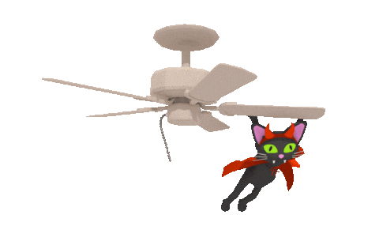
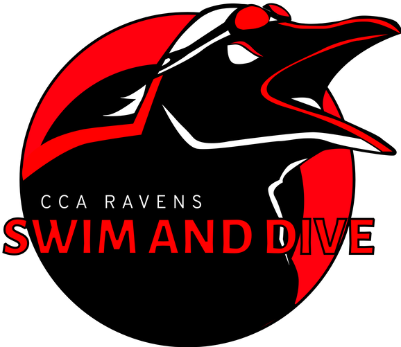
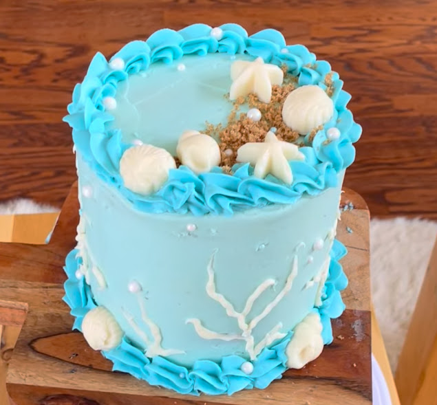
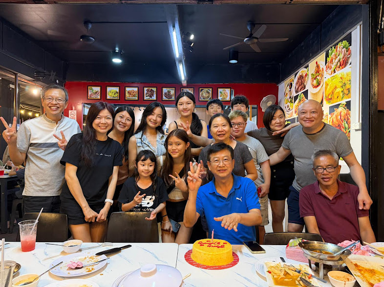

A sophomore at CCA.

I was born in Malaysia and moved here when I was three years old. My family originally planned to live in Hawaii, but eventually moved to San Diego. I went to elementary school at Olivenhain Pioneer Elementary School, but had to change schools right before 3rd grade because they were apparently full. Fourth through sixth grade was at El Camino Creek Elementary. Then, I moved on to middle school in 2022-2023 at Diegueno Middle School. Now, I’m a tenth grade student at Canyon Crest Academy. Canyon Crest Website.

My hobbies include gymnastics, snowboarding, and baking. I also recently joined CCA’s dive team because I thought gymnastics would transfer well. I do competitive trampoline and tumbling at SoCal TTC, and was crowned national champion in 2024. I don’t get the opportunity to go snowboarding often, but I always enjoy it when I do. My favorite things to bake are cakes (especially the decorating part), cookies, and cupcakes. This is my favorite cookie recipe.

I live with my dad, mom, and older brother. My brother is three years older than me, and is now in college. I love that my parents are always supportive of me whether it’s about academics or sports. Our favorite thing to do together is go on family road trips/vacations. My favorite trip we’ve been on is to Arizona, because we went on lots of hikes and also went camping. We also like visiting new restaurants and trying new cuisines. This is Arizona.